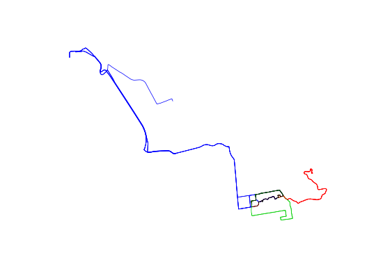
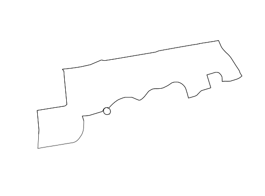

Takes a string with the file path of the zip file with the GTFS feed, imports the shapes (geometry), route and agency data and returns a SpatialLinesDataFrame for the GTFS feed.
gtfs2sldf(gtfszip = "")
| gtfszip | String with the file path of the GTFS feed zip file |
|---|
f <- system.file("extdata", "beartransit-ca-us.zip", package = "stplanr") # update file to latest version # see https://code.google.com/p/googletransitdatafeed/wiki/PublicFeeds u <- "http://data.trilliumtransit.com/gtfs/beartransit-ca-us/beartransit-ca-us.zip" # download.file(u, f) gtfs <- gtfs2sldf(gtfszip = f)#>#>plot(gtfs, col = gtfs$route_long_name)plot(gtfs[gtfs$route_long_name == "Central Campus",])not_run({ # An example of a larger gtfs feed download.file("http://www.yrt.ca/google/google_transit.zip", paste0(tempdir(),"/gtfsfeed.zip")) yrtgtfs <- gtfs2sldf(paste0(tempdir(),"/gtfsfeed.zip")) sp::plot(yrtgtfs,col=paste0("#",yrtgtfs$route_color)) })